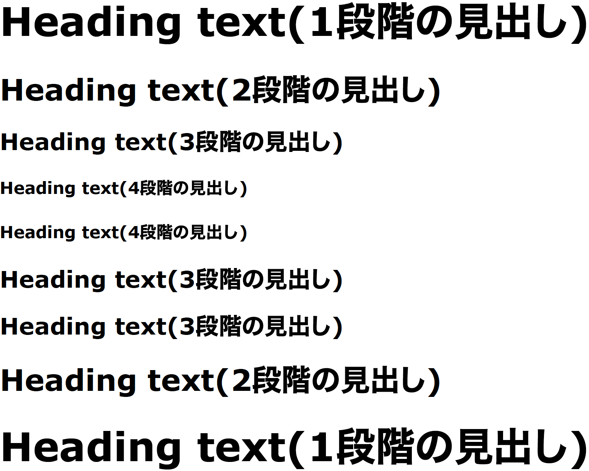
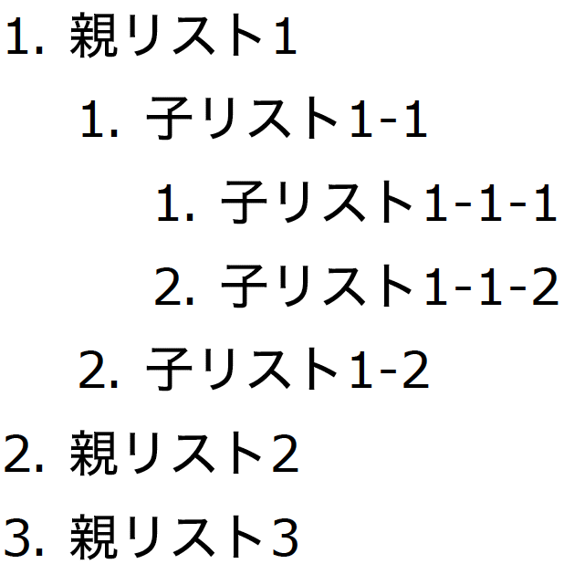
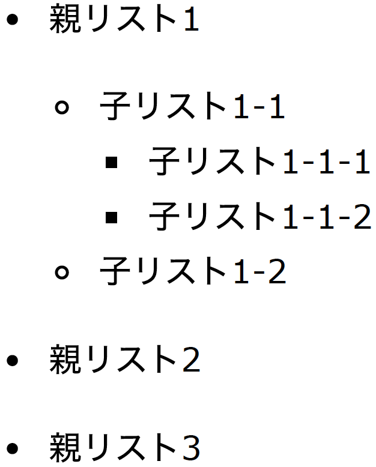
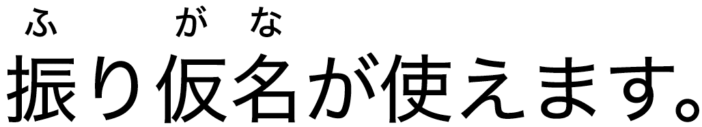
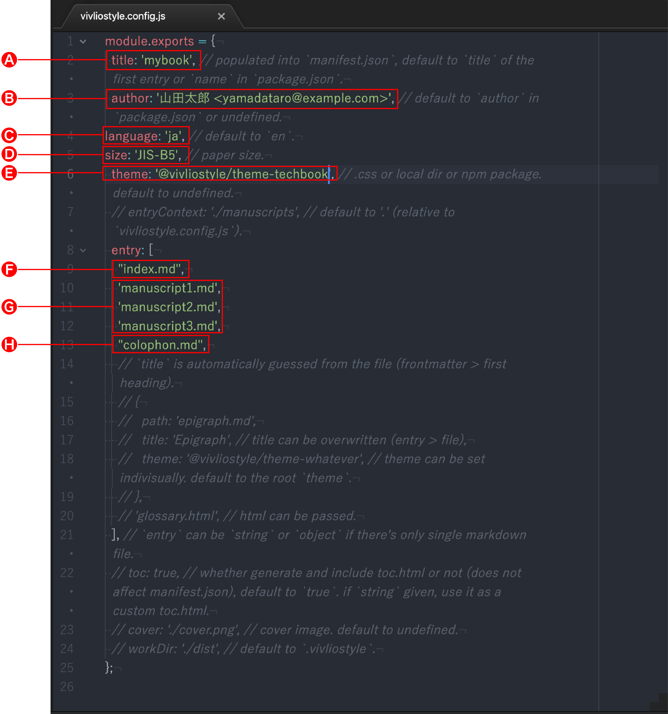
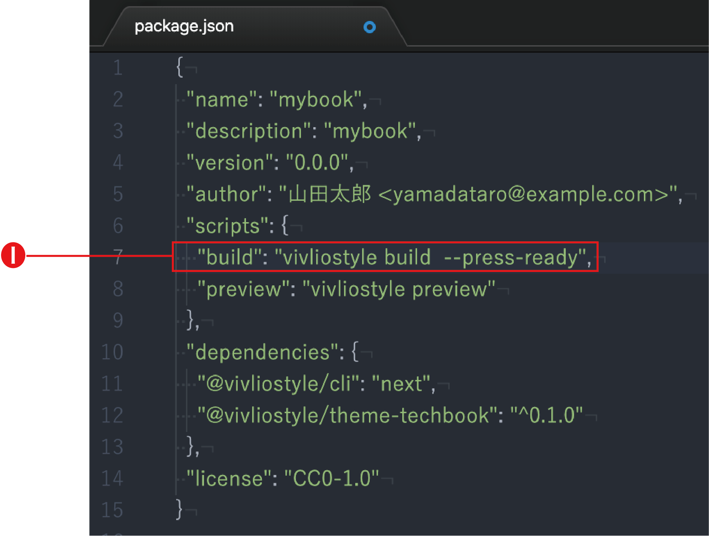

Create Book で同人誌を作ろう！
Create Book https://github.com/vivliostyle/create-book は markdown で書いた原稿を CSS 組版して、簡単に PDF ファイルへ変換する環境を構築します。HTML や CSS の詳しい知識はいりません。ルビや画像や表組、後注も入れられますし、複数の原稿をまとめることだって OK。詳細はチュートリアルガイド https://docs.vivliostyle.org/#/ja/create-book を参照していただくとして、この記事では、手っ取り早く「Create Book でできること」を紹介します。さあ、あなたも Create Book で同人誌を作りませんか？
Create Book を使うには
- まず Node.js (v.10 以上) https://nodejs.org/ja/ をインストールしてください。
- Create Book のインストールコマンドは下記の通りです。
<directory>には作成しようとする本のプロジェクトフォルダ名を指定します。
npm create book <directory>
- インストールの際、作りたい本の用途に合わせ以下のテーマパッケージのいずれかを指定します
@vivliostyle/theme-bunko……小説同人誌をふくむ縦書き文書／冊子@vivliostyle/theme-techbook……技術同人誌をふくむ横書き冊子@vivliostyle/theme-slide……スライド@vivliostyle/theme-academic……論文、レポートをふくむ横書き文書
- インストールすると下図のようなフォルダ (ここでは
mybook) が作成されます。❶〜❸のファイルを編集することで、本作りをすすめます。
VFM で原稿を書いてみよう
インストールにより作られたフォルダ内の manuscript.md (図 1❶)をテンプレートとして編集することで、本作りのための原稿を作成します。このファイルは markdown 形式。これは一定の記法 (ルール) で書くことにより、プレーンテキストから簡単に HTML へ変換できるフォーマットです。
もともと markdown はブログの原稿を書くために考案された形式です。ここから分かるように、その魅力は「原稿として書けること」、そして「HTML に変換できること」の 2 つです。原稿を最初から HTML で書く人はほとんどいないでしょう。しかし markdown 形式ならそれができます。プレーンテキストの書きやすさと、HTML の利便性の両立を狙ったフォーマットが markdown なのです。
markdown には各種の方言がありますが、その中でもっとも有力なのが GFM (GitHub Flavored Markdown) https://github.github.com/gfm/ です。ただし、これは技術ドキュメント向けに工夫された記法なので、日本語書籍向けの記法を追加したのが VFM (Vivliostyle Flavored Markdown) https://github.com/vivliostyle/vfm です。
つまり、VFM は GFM の上位互換です。見出しなどよく使う記法は GFM のままですから、慣れた人ならあまり苦労せずに使い始めることができるでしょう。以下、この項では「VFM を使ってなにが書けるの？」という疑問にお答えします。
GFMの記法
基本となる GFM の主な記法をご紹介しましょう。これ以外にもたくさんの記法があります。詳細はチュートリアルガイドや、GitHub の解説ページ https://docs.github.com/ja/github/writing-on-github/basic-writing-and-formatting-syntax を参照してください。
見出し
VFMでの記述
# Heading text(1段階の見出し)
## Heading text(2段階の見出し)
### Heading text(3段階の見出し)
#### Heading text(4段階の見出し)
#### Heading text(4段階の見出し)
### Heading text(3段階の見出し)
### Heading text(3段階の見出し)
## Heading text(2段階の見出し)
# Heading text(1段階の見出し)HTMLへの変換結果への変換結果
<section id="heading-text1段階の見出し">
<h1>Heading text(1段階の見出し)</h1>
<section id="heading-text2段階の見出し">
<h2>Heading text(2段階の見出し)</h2>
<section id="heading-text3段階の見出し">
<h3>Heading text(3段階の見出し)</h3>
<section id="heading-text4段階の見出し">
<h4>Heading text(4段階の見出し)</h4>
</section>
<section id="heading-text4段階の見出し-1">
<h4>Heading text(4段階の見出し)</h4>
</section>
</section>
<section id="heading-text3段階の見出し-1">
<h3>Heading text(3段階の見出し)</h3>
</section>
<section id="heading-text3段階の見出し-2">
<h3>Heading text(3段階の見出し)</h3>
</section>
</section>
<section id="heading-text2段階の見出し-1">
<h2>Heading text(2段階の見出し)</h2>
</section>
</section>
<section id="heading-text1段階の見出し-1">
<h1>Heading text(1段階の見出し)</h1>PDFファイルへの出力結果

リスト (順序なし)
VFMでの記述
- 親リスト1
- 子リスト1-1
- 子リスト1-1-1
- 子リスト1-1-2
- 子リスト1-2
- 親リスト2
- 親リスト3HTMLへの変換結果
<ul>
<li>親リスト1
<ul>
<li>子リスト1-1
<ul>
<li>子リスト1-1-1</li>
<li>子リスト1-1-2</li>
</ul>
</li>
<li>子リスト1-2</li>
</ul>
</li>
<li>親リスト2</li>
<li>親リスト3</li>
</ul>PDF ファイルへの出力結果

リスト (順序あり)
VFMでの記述
1. 親リスト1
1. 子リスト1-1
1. 子リスト1-1-1
2. 子リスト1-1-2
2. 子リスト1-2
2. 親リスト2
3. 親リスト3HTMLへの変換結果
<ol>
<li>親リスト1
<ol>
<li>子リスト1-1
<ol>
<li>子リスト1-1-1</li>
<li>子リスト1-1-2</li>
</ol>
</li>
<li>子リスト1-2</li>
</ol>
</li>
<li>親リスト2</li>
<li>親リスト3</li>
</ol>PDF ファイルへの出力結果

リンク
記法
[text](url)
VFMでの記述
[Vivliostyle](https://vivliostyle.org)
HTMLへの変換結果
<a href="https://vivliostyle.org">Vivliostyle</a>
PDF ファイルへの出力結果
強調
記法
**text**
VFMでの記述
**なんて太い強調だ**
HTMLへの変換結果
<strong>なんて太い強調だ</strong>
PDF ファイルへの出力結果
GFMを拡張する記法
GFM では書けない、VFM の拡張記法をご紹介します。いずれも技術ドキュメントには必須でなくとも、日本語書籍では不可欠な表現ばかりです。
ルビ
記法
{漢字|ルビ}
VFMでの記述
{振|ふ}り{仮名|がな}が使えます。
HTMLへの変換結果
<ruby>振
<rt>ふ</rt>
</ruby>り
<ruby>仮名
<rt>がな</rt>
</ruby>が使えます。PDF ファイルへの出力結果

画像のサイズとキャプション
記法
{width=nnn}
画像ファイルは( )内に相対パスで指定します。xxx は数値、単位は px ですが省略して記述します。width (幅) の他に height (高さ) も使えます。
VFMでの記述
{width=1500}
HTMLへの変換結果
<figure>
<img src="./fig-1.jpeg" alt="VFMならキャプションも書けます。画像のサイズは幅1500pxです。" width="1500">
<figcaption>VFMならキャプションも書けます。画像のサイズは幅1500pxです。</figcaption>
</figure>PDF ファイルへの出力結果

後注
記法
text[^n]text^[text]
[^n]: textVFMでの記述
朝、食堂でスウプを一さじ[^1]、すっと吸ってお母さまが、「あ」と幽かな叫び声^[本文の中に書いた注記を後注にすることもできます]をお挙げになった。
[^1]:このように後注が使えます。HTMLへの変換結果
<p>朝、食堂でスウプを一さじ
<sup id="fnref-1">
<a href="#fn-1" class="footnote-ref">1</a>
</sup>、すっと吸ってお母さまが、「あ」と幽かな叫び声
<sup id="fnref-2">
<a href="#fn-2" class="footnote-ref">2</a>
</sup>をお挙げになった。
</p>
</section>
</section>
<div class="footnotes">
<hr>
<ol>
<li id="fn-1">このように後注が使えます。
<a href="#fnref-1" class="footnote-backref">↩</a>
</li>
<li id="fn-2">本文の中に書いた注記を後注にすることもできます
<a href="#fnref-2" class="footnote-backref">↩</a>
</li>
</ol>PDF ファイルへの出力結果
脚注
インストールの際にテーマパッケージ @vivliostyle/theme-techbookを選択した場合、以下の記法で脚注を使えます。
記法
<span class="footnote">footnote text</span>VFMでの記述
「さよなら。」って、その子は花<span class="footnote">この部分が脚注になります。</span>に言った。
でも花はなにも返さなかった。
「さよなら。」って、もういちど言った。
花はえへんとやったけど、病気のせいではなかった。
「あたし、バカね。」と、なんとか花がいった。「ゆるしてね。お幸せに。」
つっかかってこなかったので、その子はびっくりした。ガラスの覆いを持ったまま、おろおろと、その場に立ちつくした。どうして穏やかでやさしいのか、分からなかった。
「ううん、好きなの。」と花は言った。「きみがそのこと分かんないのは、あたしのせい。どうでもいいか。でも、きみもあたしと同じで、バカ<span class="footnote">これが2番目の脚注です</span>。お幸せに。……覆いはそのままにしといて。もう、それだけでいい。HTMLへの変換結果
「さよなら。」って、その子は花
<span class="footnote">この部分が脚注になります。</span>に言った。
<br>でも花はなにも返さなかった。
<br>「さよなら。」って、もういちど言った。
<br>花はえへんとやったけど、病気のせいではなかった。
<br>「あたし、バカね。」と、なんとか花がいった。「ゆるしてね。お幸せに。」
<br>つっかかってこなかったので、その子はびっくりした。ガラスの覆いを持ったまま、おろおろと、その場に立ちつくした。どうして穏やかでやさしいのか、分からなかった。
<br>「ううん、好きなの。」と花は言った。「きみがそのこと分かんないのは、あたしのせい。どうでもいいか。でも、きみもあたしと同じで、バカ
<span class="footnote">これが2番目の脚注です</span>。お幸せに。……覆いはそのままにしといて。もう、それだけでいい。」PDF ファイルへの出力結果
この他にも、引用やコード、表組みなど、さまざまな表現が可能です。ぜひチュートリアルガイドや GitHub の解説ページをご参照ください。
縦中横
Creat Book は、インストールの際テーマパッケージ @vivliostyle/theme-bunko を選択すると縦書きになります。その際、下記のように HTML により縦中横を指定できます。
記法
text<span class="tcy">nn</span>textVFMでの記述
ええと<span class="tcy">4</span>×<span class="tcy">5</span>＝<span class="tcy">12</span>、<span class="tcy">4</span>×<span class="tcy">6</span>＝<span class="tcy">13</span>、<span class="tcy">4</span>×<span class="tcy">7</span>——ああ、もう！ そんな調子じゃいつまでも<span class="tcy">20</span>にならなくてよ！HTMLへの変換結果
<p>ええと
<span class="tcy">4</span>×
<span class="tcy">5</span>＝
<span class="tcy">12</span>、
<span class="tcy">4</span>×
<span class="tcy">6</span>＝
<span class="tcy">13</span>、
<span class="tcy">4</span>×
<span class="tcy">7</span>——ああ、もう！ そんな調子じゃいつまでも
<span class="tcy">20</span>にならなくてよ！
</p>PDF ファイルへの出力結果
Create Book でPDFファイルを出力しよう
本のカスタマイズ
原稿が完成したら本を作ってみましょう。Create Book は以下のように CSS 組版した後、自動的に PDF ファイルを出力します。
- markdown ファイルを HTML に変換
- それを Vivliostyle CLI が、
vivliostyle.config.js(図 1❷) の設定に従い組版 - さらに
package.json(図 1❸) の設定に従い、PDF ファイルに出力
作りたい本の大まかな用途や造本イメージは、インストール時にテーマパッケージを選択することで決定しましたが、さらに細かな設定を vivliostyle.config.js や package.json を編集することでおこなう訳です。複数の原稿を 1 冊にまとめたり、目次、奥付を追加する設定もここでおこないます。
vivliostyle.config.js (図1❷)の編集

- 🅐書名の指定 https://docs.vivliostyle.org/#/ja/create-book#%E6%9B%B8%E5%90%8D%E3%81%AE%E6%8C%87%E5%AE%9A
- 🅑著者名とメールアドレスの指定 https://docs.vivliostyle.org/#/ja/create-book#%E8%91%97%E8%80%85%E5%90%8D%E3%81%A8%E3%83%A1%E3%83%BC%E3%83%AB%E3%82%A2%E3%83%89%E3%83%AC%E3%82%B9%E3%81%AE%E6%8C%87%E5%AE%9A
- 🅒使用言語の指定 https://docs.vivliostyle.org/#/ja/create-book#%E4%BD%BF%E7%94%A8%E3%81%99%E3%82%8B%E8%A8%80%E8%AA%9E%E3%81%AE%E6%8C%87%E5%AE%9A
- 🅓判型の指定 https://docs.vivliostyle.org/#/ja/create-book#%E5%88%A4%E5%9E%8B%E3%81%AE%E6%8C%87%E5%AE%9A
- 🅔テーマパッケージの指定 https://docs.vivliostyle.org/#/ja/create-book#%E3%83%86%E3%83%BC%E3%83%9E%E3%83%95%E3%82%A1%E3%82%A4%E3%83%AB%E3%81%AE%E6%8C%87%E5%AE%9A
- 🅕目次の追加 https://docs.vivliostyle.org/#/ja/create-book#%E7%9B%AE%E6%AC%A1%E3%81%AE%E8%BF%BD%E5%8A%A0
- 🅖複数原稿の掲載 https://docs.vivliostyle.org/#/ja/create-book#%E8%A4%87%E6%95%B0%E5%8E%9F%E7%A8%BF%E3%81%AE%E6%8E%B2%E8%BC%89
- 🅗奥付の追加 https://docs.vivliostyle.org/#/ja/create-book#%E5%A5%A5%E4%BB%98%E3%81%AE%E8%BF%BD%E5%8A%A0
package.json(図1❸)の編集

PDFファイルの出力
以下のコマンドにより、Vivliostyle CLI が上記設定ファイルを読み込み、自動的に PDF ファイルを出力します。これで完成です！
npm run build
より詳細は以下をご参照ください。
以上、駆け足で Create Book をご紹介しました。このページの情報はあくまで一部、より詳しいことはぜひチュートリアルガイドを読んでみてください。それから、Create Book はまだまだ開発途上。「これって不具合？」「こんなことができればいい！」などありましたら、ぜひ下記からお知らせください！
- コミュニティ Vivliostyle https://vivliostyle.org/ja/community/